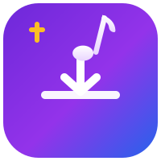
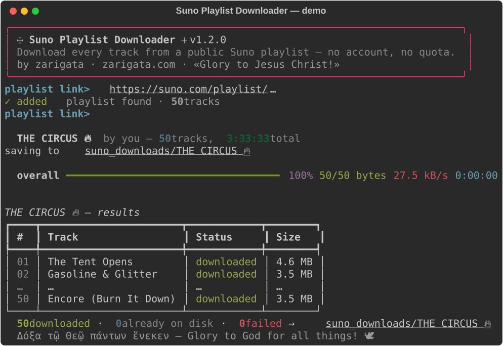

free · open source · no login
☩ Suno Playlist Downloader
Download every track from any public Suno AI playlist — your songs, your files. No account, no password, no 20-downloads-a-month wall.

✦Everything it does
🔓 No account, no limits
Works with the public playlist link alone — no login, no password, no download quota. 5 songs or 500.
🖱️ Double-click simple
macOS .dmg, Windows .bat and Linux launcher. Paste a link, press Enter, watch it fill.
🎵 Real audio files
Saves .m4a exactly as Suno streams it, numbered in playlist order; optional --mp3 conversion via ffmpeg.
🐢 Respectful & resumable
One track at a time with human-like pauses, stops instantly if Suno says slow down, skips files you already have.
🛡️ IP-friendly
Traffic looks like one person listening to the playlist once. Route through your own VPN with --proxy.
🧩 Power-user CLI
Multiple playlists at once, custom output folder, overwrite control — plus the friendly interactive mode.
➊Quick start
macOS — easiest
- Get
Suno-Playlist-Downloader-macOS.dmgfrom Releases - Drag the folder to your Desktop, open it
- Double-click Start Suno Downloader.command
- Paste your playlist link → Enter → Enter
Music lands in Music → Suno Downloads.
Windows
- Code → Download ZIP, unzip
- Double-click Start Suno Downloader.bat
- First run sets itself up (opens python.org if needed)
- Paste your playlist link → Enter → Enter
Music lands in suno_downloads/ next to the script.
Linux / terminal
git clone https://github.com/zarigata/sudodownloader.git
cd sudodownloader
./start-linux.sh "https://suno.com/playlist/<id>"Or python3 suno_dl.py for the interactive mode.
⚙How it works — and why it's gentle
Suno playlists that are shared publicly play in anyone's browser. This tool makes exactly the same requests a browser makes when a guest listener presses play: one public metadata call for the playlist, then per track one keys request (Suno serves audio encrypted at rest; the keys are granted to anonymous listeners) and one file fetch — decrypted locally on your machine, verified as real audio, saved. Sequential, randomized pauses, hard stop on any 403/429. Nothing uploaded, no account touched.
?FAQ
Where are my files?
Music/Suno Downloads (macOS launcher) or suno_downloads/<playlist>/ next to the script, numbered 01 - Song.m4a… in playlist order.
Why .m4a and not .mp3?
Suno no longer serves mp3s at all — everything is m4a (Opus) behind the download button. m4a plays everywhere modern; add --mp3 (with ffmpeg) to convert.
Does it need my Suno login?
No. No email, no password, no cookies — just the public playlist link.
Will my IP get flagged?
The tool is deliberately gentle and stops instantly if Suno signals to slow down. Use --proxy to route through your VPN.
It says “Playlist not found”.
The playlist must be public: in Suno open the playlist → ⋯ → share/public, then copy the link again.
Can it download someone else's songs?
It works with any public link — use it for your own music and what's shared with you. Bulk-downloading strangers' work may conflict with Suno's Terms of Service.
Is it really free?
MIT-licensed open source. ✝ Free as a gift — pass it on.
🃏Why I built it
You craft fifty songs with your own two hands, and one day a polite little counter appears — 20 downloads a month. A circus tent, a velvet rope, and a clown in a suit smiling down at you: “these were never really yours, you know.”
FUCK YOU SUNO.
They're my songs. So I stitched this little joker of a script together, splashed a match on the quota, and now I hand fire to everyone who walks past. Not for money. Not for fame. I just want to lean back with popcorn and watch the big-top of download limits burn down while the music keeps playing. 🔥🎪
“I just want to watch the world burn.” — some guy in face paint
Use it. Share it. Pass the matches. 🕊️
Δόξα τῷ Θεῷ πάντων ἕνεκεν — Glory to God for all things!